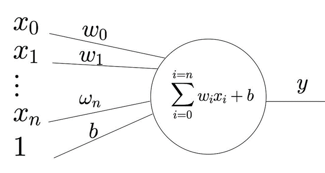

In this module, we will implement a basic neural network using PyTorch, with no hidden layers. This type of neural network is often referred to as a single-layer perceptron (SLP). We will use torch.nn.Linear to define the input-output relationship and implement training with a loss function and optimizer.
A perceptron is the simplest type of artificial neural network. It is a linear classifier, meaning it makes decisions based on a linear combination of the input features. A perceptron consists of an input layer and an output layer, without any hidden layers. The structure of the perceptron model is:
Output = Input * Weights + Bias
Since there are no hidden layers and no non-linear activation functions, the model is a linear transformation of the input data.
The perceptron was first introduced by Frank Rosenblatt in 1958 as an algorithm modeled after the human brain’s neural structure. The perceptron was one of the earliest models of neural networks, designed to recognize patterns and make decisions based on input data.
It was considered groundbreaking at the time, as it could learn from data and adjust its weights accordingly, which allowed it to "learn" how to classify input data into categories. However, due to its linear nature, the perceptron has certain limitations, which we’ll explore below.

The diagram above represents a perceptron model, where the perceptron takes several input values x_1, x_2, x_3,...x_n and combines them using corresponding weights w_1, w_2, w_3,..,w_n. The perceptron is a simple model where the input data is combined linearly.
The perceptron model can be mathematically described as:
Where:
The perceptron will classify data into two categories by applying a threshold to the output. If the weighted sum of the inputs plus the bias is greater than a certain threshold, the perceptron outputs one class; otherwise, it outputs the other class.

This model, represented by the diagram, was famously analyzed by Marvin Minsky and Seymour Papert in their 1969 book "Perceptrons", where they demonstrated the limitations of this simple neural network, particularly its inability to solve problems like the XOR problem.
Despite its early success, the single-layer perceptron has significant limitations:
Because of these limitations, more advanced models like multi-layer perceptrons (MLPs), which add hidden layers and non-linear activation functions, have become more widely used in modern machine learning.
In PyTorch, we can implement a perceptron using torch.nn.Linear to define the input-output relationship. Here’s how the layer is defined:
input_size = 2
output_size = 1
# Define the model (single layer, no hidden layers)
linear_layer = nn.Linear(input_size, output_size)This is a basic linear transformation where the output is the weighted sum of the inputs plus a bias term. Because there are no hidden layers, it fits the definition of a perceptron.
The input data is passed through the model to get the output predictions. Since this is a basic model with no hidden layers, the input is directly multiplied by the weights and added to the bias to produce the output:
# Dummy input data (2 features)
inputs = torch.tensor([[1.0, 2.0], [2.0, 3.0]])
# Forward pass (predict outputs)
outputs = linear_layer(inputs)
print("Initial outputs:", outputs)We define a loss function to measure how far the predicted values are from the actual target values. We'll use nn.MSELoss() for mean squared error and optim.SGD for Stochastic Gradient Descent optimization:
# Define a loss function and optimizer
loss_function = nn.MSELoss()
optimizer = optim.SGD(linear_layer.parameters(), lr=0.01)To train the model, we run a loop for 100 iterations (epochs). In each iteration, the network performs the following steps:
# Training loop
for epoch in range(100):
optimizer.zero_grad() # Zero the gradients
outputs = linear_layer(inputs) # Forward pass
loss = loss_function(outputs, targets) # Compute the loss
loss.backward() # Backward pass
optimizer.step() # Update weights
if epoch % 10 == 0:
print(f'Epoch [{epoch+1}/100], Loss: {loss.item():.4f}') # Print lossAfter training, we can test the model on new data. We switch the model to evaluation mode using torch.no_grad(), which disables gradient calculation to save memory:
# Evaluation (test with new inputs)
with torch.no_grad():
test_inputs = torch.tensor([[3.0, 4.0]])
test_outputs = linear_layer(test_inputs)
print("Test output:", test_outputs)This example demonstrated a basic neural network without hidden layers using PyTorch. The model was defined as a single linear layer using nn.Linear. This type of model, known as a perceptron, is a linear classifier that can only handle linearly separable data. Despite its historical significance, the perceptron has limitations in handling complex data, which led to the development of multi-layer perceptrons and other more powerful neural network architectures.